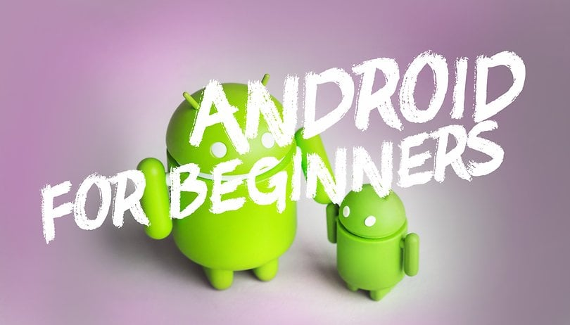

Nessa aula vamos aprender a criar um site resposivo
O que é O Google Glass é um acessório em forma de óculos que possibilita a interação dos usuários com diversos conteúdos em realidade aumentada. Também chamado de Project Glass, o eletrônico é capaz de tirar fotos a partir de comandos de voz, enviar mensagens instantâneas e realizar vídeoconferências. Seu lançamento está previsto para 2014, e seu preço deve ser de US$ 1,5 mil. Atualmente o Google Glass encontra-se em fase de testes e já possui um vídeo totalmente gravado com o dispositivo. Além disso, a companhia de buscas registrou novas patentes anti-furto e de desbloqueio de tela para o acessório. [AQUI ENTRA UMA FOTO] Data de lançamento Não há uma data específica e oficial para o dispositivo ser lançado, ainda. Pode ser que ele esteja disponível em demonstrações a partir de 2013, mas seu lançamento para as lojas fica para, pelo menos, 2014.
Como funciona De acordo com fontes próximas do Google, os óculos vão contar com uma pequena tela de LCD ou AMOLED na parte superior e em frente aos olhos do usuário. Com o uso de uma câmera e GPS, você pode se situar, assim como selecionar opções com o movimento da cabeça